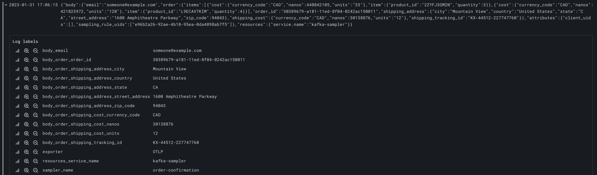

Playground¶
How to locally try Neblic using Docker Compose¶
The best way to get a feel of how Neblic can help you troubleshoot your distributed applications is to locally spin up a few services instrumented with Neblic, and play with them. We provide a playground based on Google's awesome microservices-demo project that, with just a few commands, will allow you to troubleshoot a microservices-based e-commerce application using Neblic.
Note
This guide assumes that the reader has a basic understanding of Docker Compose. If not, please, refer to the official Docker Compose documentation to understand what it is and how to install it.
The goal of this guide is not to explain how Neblic or its components work, but to demonstrate its capabilities by troubleshooting a demo application. Therefore, it won't go into detail about every concept or component introduced.
Bringing up the environment¶
-
Clone the
Neblic playgroundrepository -
Use Docker Compose to spin up the demo services and Neblic components. The first time will take a while (should be less than 5 minutes on a modern machine) as it needs to pull and build some containers.
This command will bring up the services described here plus a few Neblic components. -
You can load the e-commerce site by going to http://localhost:8080/. You can freely interact with it. There is also a load generator that mimics user behavior which is constantly adding items to the cart and creating orders.
Troubleshooting a bug¶
Now, let's troubleshoot a simple bug with Neblic! Someone reported that the order confirmation emails sent by the email service are missing the customer's name. You can verify this by going to http://localhost:8081. This simple web server shows the confirmation emails that would have been sent.
{kind=link}
As you can see in the architecture diagram, the email service (bottom-left corner) receives order confirmation messages from Apache Kafka. These are generated by the checkout service. To troubleshoot the issue, the first step might be to look at what the email service is reading from Kafka to make sure it is getting the data we expect. To do this, you can enable a Sampler that gets Data Samples from Kafka and have it export them so that you can see the messages received on that topic.
-
To configure the sampler, you will use the
neblictlcommand. You can use theneblictlbinary bundled in the collectorotelcolimage. Run the following command from theplaygroundfolder.neblictlis an interactive command-line interface (CLI), so executing it will show you a prompt where you can enter commands. -
The
emailservice consumes order confirmation messages from the topic calledorder-confirmation. Let's find theSamplerthat intercepts them. The followingneblictlcommand will get all the registeredSamplers. You should see a table listing many
You should see a table listing many Samplersand among them, one calledorder-confirmation. ThisSampleris automatically created by a service calledkafka-samplerthat is capable of getting data on-demand from anyKafkatopic. -
The last column (
Samples exported) shows the number of samples that have been exported. Given that there aren't anySampling Rulesdefined, right now the value is0. To keep it simple, you can just add a rule that gets all theData Samplesthat theSamplerintercepts.Note
Normally, you would add a rule using an expression that will allow you to just export the
Data Samplesthat meet certain conditions based on their contents (e.g. all theData Samplesthat do not have the customer name set,sample.order.shipping_address.full_name == "")The following
Less than a minute after adding the rule, you should see how theneblictlcommand will create theSampling Rule.Samples Exportedcounter starts to increase. -
To continue, you need to go to
Grafanato seeData Samplesthat have been exported to understand if theemailservice is receiving what is expected.Grafanais listening at http://localhost:3000/ (default user: admin, password: admin). TheData Samplesare stored inLoki, a database created byGrafana labs, that is perfectly integrated withGrafana. On the left menu, you will see a compass that will bring you to theExploresection. In there, you will need to:- Select
Lokion the top-level dropdown to explore its contents. - Apply a
label filterselecting thesampler_namecalledorder-confirmationto only seeData Samplessent by theSamplerwe are interested in. - Optionally, add a
jsonfilter so it parses the contents of theData Samples.
It should look similar to this:
Now, after pressing
Run Query(top right), you should see the capturedData Samples:  Oh, it seems that it is not receiving the customer name! of course the service can't write it into the email. Then, the problem may be in another service. Let's check if the previous service,checkout, receives it. - Select
-
Following the previous two steps again, you can set up another
Sampling Rulein theSamplercalled/hipstershop.CheckoutService/PlaceOrderReq. ThisSampleris created by a gRPC interceptor that automatically createsSamplersin each gRPC method.This time, to not capture all the
Data Samplesbut just the ones that do not have the customer name, you could use a rule like this one (you would need to know the message schema by, for example, checking the Protocol Buffer definition or using some previously capturedData Samplesas reference):>>> create rule checkoutservice /hipstershop.CheckoutService/PlaceOrderReq sample.address.full_name==""In
Grafanayou'll find the followingData Sample: Mh, no customer name either? Is the
Mh, no customer name either? Is the frontendreceiving it, then? -
A quick look at the browser's POST request sent to the
frontendservice shows that it is receiving the customer's name so apparently, we will have to dig into thefrontendservice code to understand why it is not being propagated to thecheckoutservice.Found it! it looks like the backend team did not implement the changes to fill the customer name when processing an order, luckily, that will be an easy fix!
{kind=link}
{kind=link}
Summary¶
This quick start has shown how you can quickly troubleshoot an issue by getting Data Samples from multiple services and applications using a single tool. The alternative would have been much more time-consuming as it would have involved manually consuming and filtering data from Apache Kafka and somehow getting the request bodies across services.
For the sake of brevity, this guide has only shown the basic functionality that Neblic can offer, but it can do much more!
Next steps¶
If you would like to learn more about the concepts that define Neblic, it is recommended that you take a look at the concepts page. Then, once you are familiarized with how Neblic works and its architecture, you can go to the deployment guide to learn how best to deploy it in your environment!